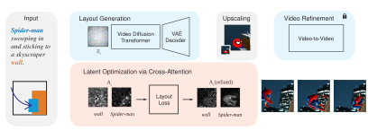

Guide
Layout Guided Video Synthesis
Hover to reveal the layout boxes
Adding control to video generation often requires training, extra data, or architectural changes. Latent Space Jam steers a pretrained video diffusion model with bounding boxes across frames — a training-free layout and motion interface.
The method runs in two passes. First, prompt-guided cross-attention is optimized so objects land where the boxes say. That coarse guide is then injected back into the same model, which restores visual quality while keeping the intended composition and trajectory.
A two-pass pipeline on a frozen video diffusion backbone. Hover a stage to inspect it.

Hover a colored block to inspect
The first pass can look rough. That is the point: push layout as far as it will go, then let the pretrained model restore appearance.
Guide
Refined
A goat climbing down some rocks.
Hover either clip to reveal the layout boxes
Hover any clip to see the boxes that steered it.
A horse jumping over a hurdle.
A man surfing on the waves.
A motorcycle driving on the road.
A black dog walking in a park.
A cow walking on a grassy field.
A black swan swimming in a lake.
A goat climbing down some rocks.
A car driving around a roundabout.
A motorcyclist jumping over a bump.
A man jumping over a fence.
A bicyclist riding in front of a painted wall.
A man flying off a cliff with a parachute.
Two koi fish, one deep blue and one bright orange.
Spider-Man swooping in and sticking to a skyscraper wall.
A basketball player dunking into a hoop on the moon.
Glowing ink spirit flying through ancient stone pillars.
A skier carving a slalom through trees.
A paint figure colliding with an ink shadow.
Each row uses one prompt and one layout. We show text-to-video, prior training-free methods, and Latent Space Jam side by side.
A bicyclist riding in front of a painted wall.
Layout
Ours
T2V
TrailBlazer
FreeTraj
Peekaboo
A man walking calmly as a dramatic explosion erupts behind him.
Layout
Ours
T2V
TrailBlazer
Layout-guided attention also edits an existing video or restyles selected tokens, still without training.
Edited
The Joker speaks in front of the camera while his hair is on fire.
Hover for the source
Edited
A lightbulb hanging in front of a brick wall, glowing brightly.
Hover for the source
Stylization
Film noir scene of a woman walking. The entire scene is monochrome — except her dress, which is vivid crimson red.
Hover to reveal the layout boxes
Refined-stage results. Latent Space Jam is strongest on overlap and trajectory, and stays competitive on visual quality.
| Method | Static | Dynamic | Multi-object | ||||||||||||
|---|---|---|---|---|---|---|---|---|---|---|---|---|---|---|---|
| IoU ↑ | CD ↓ | I-AP50 ↑ | FVD ↓ | CLIP ↑ | IoU ↑ | CD ↓ | I-AP50 ↑ | FVD ↓ | CLIP ↑ | IoU ↑ | CD ↓ | I-AP50 ↑ | FVD ↓ | CLIP ↑ | |
| Peekaboo | 19.45 | 18.96 | 66.71 | 132.92 | 29.14 | 11.89 | 25.06 | 43.45 | 126.75 | 29.37 | — | — | — | — | — |
| FreeTraj | 19.47 | 17.08 | 57.56 | 126.75 | 30.20 | 13.91 | 21.68 | 42.41 | 110.90 | 29.94 | — | — | — | — | — |
| TrailBlazer | 16.95 | 19.42 | 45.13 | 126.76 | 30.26 | 14.40 | 22.71 | 42.43 | 114.37 | 29.86 | 11.60 | 33.53 | 36.92 | 235.19 | 30.00 |
| TrailBlazer (Wan 2.2) | 21.25 | 18.89 | 56.03 | 140.14 | 28.75 | 17.46 | 19.95 | 49.86 | 135.63 | 29.61 | 13.86 | 32.47 | 33.51 | 204.73 | 31.27 |
| T2I | 21.44 | 20.49 | 60.87 | 174.56 | 26.11 | 27.23 | 17.42 | 62.67 | 174.95 | 26.63 | 11.95 | 36.11 | 34.27 | 221.30 | 24.20 |
| Ours (Wan 2.2) | 28.24 | 12.87 | 80.30 | 117.41 | 28.93 | 27.64 | 11.24 | 84.57 | 132.38 | 27.63 | 25.83 | 21.87 | 69.03 | 198.57 | 30.76 |
| Ours (LTX-2) | 36.55 | 9.84 | 81.38 | 130.10 | 31.08 | 35.24 | 10.74 | 88.42 | 119.30 | 31.13 | 27.23 | 22.41 | 60.74 | 228.52 | 32.05 |
@misc{anonymous2026latent,
title = {Latent Space Jam: Layout Guided Video Synthesis},
author = {Anonymous},
year = {2026}
}